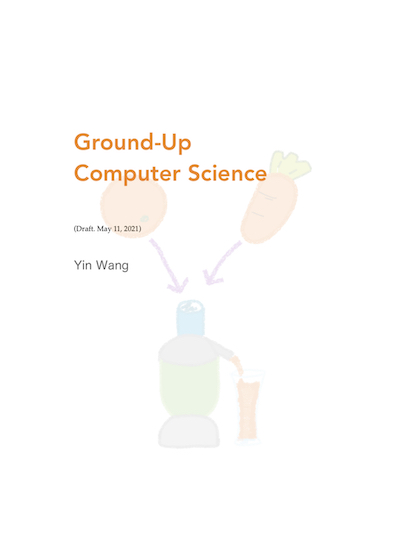

『Ground-Up Computer Science』样章

经过两个月的阅读班实验，我的计算机科学入门教材已经完成了前面 6 章的草稿，还剩最后两章正在继续写。这本书暂命名为『Ground-Up Computer Science』，就是“从地而起”，不需要其它基础的意思。
完善这本书，到最后发表肯定需要更多时间，所以我先把第一章的草稿发布在这里，提供给大家作为入门学习之用。准备参加计算机科学基础班的同学，也可以通过这个样章预习第一课的内容。
第一章虽然是最基础的内容，它却是这本书里面最长的一章，所以信息含量其实是相当大的。用这一章的内容打好基础之后，后面难度高的章节反而越来越短。
因为草稿会被经常改动，所以里面的插图都是用 iPad 手画的，比较潦草，颜色也没有很好的搭配，请大家见谅。正式出版的时候会把图片重新画一遍。另外，对话的两个人物的名字也没有想好，所以暂且叫 A 和 B。A 是老师，B 是学生。
关于版权。这个文档的内容受版权法保护，我保留一切版权。仅供个人阅读和学习，不能将其作为商业用途。请勿转载或拷贝这个文档到其它网站，也请勿翻译。这个博客上的链接应该作为这个样章唯一的来源，链接是可以分享的。如果发现有违反版权约定或抄袭的现象，请来信告诉我。如果发现有错误或者可以改进的地方，欢迎跟我联系。
样章可以在这里下载：
请注意这只是前两节课的内容，不可能包罗万象。因为是样章，所以不提供练习和指导。因为免费样章已经包含了很多价值，所以这本书可能不会再有其它免费内容发布。